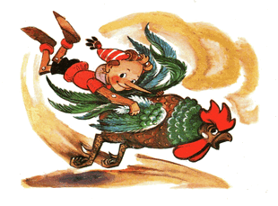

Karabas Barabas dan Duremar menyegarkan diri dengan babi panggang. Si master menuangkan anggur ke gelas mereka.
Karabas Barabas mengemut kaki babi, dan berkata pada master:
- Anggurmu murahan, tuangkan padaku sesuatu dari kendi itu! /dia menunjuk dengan tulang ke arah kendi tempat Buratino bersembunyi/
- Signor, kendi itu kosong /jawab master/
- Pembohong, tunjukkan.
Kemudian si master mengangkat kendi itu dan membalikkannya atas ke bawah, Buratino sekuat tenaga menekankan siku dan lututnya ke dinding kendi itu supaya tidak jatuh.
- Tadi ada yang kehitam-hitaman di situ /kata Karabas Barabas/
- Ada yang keputih-putihan tadi /kata duremar/
- Signor, ada kutil di lidah saya, ada bisul di pinggang saya, kendi ini kosong!
- Kalau begitu, taruh kendi itu di atas meja /untuk kami buang tulang-tulang kesitu/
Kendi tempat Buratino bersembunyi itu diletakkan di antara sutradara teater boneka dan penjual lintah-obat. Tulang-tulang dan remah-remah berjatuhan di kepala Buratino.
Karabas Barabas, setelah meminum banyak anggur, dia mendiangkan jenggotnya ke perapian supaya getah-getah lengket itu menetes.
- Akan ku letakkan si Buratino di satu telapak tanganku, /dia sesumbar/ lalu ku tepuk dengan telapak tanganku yang satunya lagi, kuperas dia sampai muncrat.
- Berengsek-berengsek itu pantas mendapatkannya /timpah Duremar/ tapi pertama-tama, akan lebih bagus jika kita tempelkan dulu lintah-lintah pada mereka untuk menghisap semua darah mereka sampai kering.
- Bukan! /Karabas Barabas menghentakkan tinjunya/ Pertama-tama, akan kurebut kunci emas itu darinya...
Si master menyertakan diri dalam obrolan, dia tahu tentang manusia kayu buronan itu.
- Signor, Anda tidak perlu repot-repot mencarinya. Biar saya panggilkan dua anak buah lincah, sementara anda beristirahat minum anggur, mereka dengan cepat menyisir seluruh hutan dan segera menyeret Buratino itu ke sini.
- Oke. Panggil anak buahmu itu /kata Karabas Barabas, mendiangkan sol sepatunya ke perapian/ Dan seperti biasa ketika dia mulai mabuk, dia dengan segenap kerongokannya bernyanyi:
Rakyat anehku,Lalu Buratino, dengan suara yang menggema, berkata di dasar kendi:
- Ungkapkan rahasiamu... orang malang... ungkapkan rahasiamu!..
Karabas Barabas kaget dan mengatupkan rahangnya sangat nyaring dan melotot pada Duremar.
- Itu kau?
- Bukan, itu bukan aku...
- Siapa yang barusan meyuruhku untuk membuka rahasia?
Duremar percaya takhayul, apalagi dia sedang mabuk anggur. Wajahnya memerah dan mengkerut ketakutan, seperti jamur morel.
Dia menatap balik, dan Karabas Barabas gemetar giginya.
- Buka rahasia... /lagi-lagi suara misterius itu melolong di dasar kendi/ jika tidak, pantatmu tidak akan bisa lepas dari kursi, orang malang!
Karabas Barabas coba beranjak, tetapi sedikitpun dia tidak mampu untuk bangkit.
- Ra ra ra rahasia a apa? /tanya dia terbata-bata/
Suara itu menjawab:
- Rahasia penyu Tortilla...
Saking takutnya, Duremar perlahan merangkak ke kolong meja. Karabas Barabas rahangnya ternganga!

- Di mana pintunya berada... di mana pintunya berada?.. / Seolah angin bersiul dari cerobong di malam musim gugur, merambatkan suara aneh/
- Akan ku jawab, akan ku jawab, sudah, sudah diam! /Karabas Barabas berbisik/ Pintunya ada di pondok si tua Carlo, di balik lukisan perapian...
Ketika dia berbicara begitu, si master datang memasuki halaman.
- Inilah anak buah yang bisa diandalkan, demi uang, mereka siap memburu siapa pun untukmu, signor, iblis sekalipun...
Lalu dia mempersembahkan si rubah Alisa dan si kucing Basilio yang berdiri di ambang pintu. Si rubah memberi hormat melepaskan topinya:
- Signor Karabas Barabas akan memberi kita sepuluh koin emas untuk disumbangkan. Dan kami akan mendatangkan si berengsek Buratino itu ke tangan anda, tanpa harus beranjak sedikitpun dari tempat ini.
Karabas Barabas merogoh jenggotnya di saku jaket, mengeluarkan sepuluh keping emas.
- Nih uangnya, mana si Buratino?
Rubah itu menghitung koinnya berulang kali, menghela nafas, memberikan setengah pada si kucing, kemudian menunjuk dengan cakarnya:
- Simsalabim, dia ada di dalam kendi itu signor, di bawah batang hidungmu...
Karabas Barabas mengangkat kendi dari meja itu kemudian membantingkannya dengan keras ke lantai batu. Dari tumpukan remah dan tulang-tulang muncul Buratino. Sementara semua orang tercengang, mulut menganga, dia seperti anak panah, melesat dari kedai ke halaman; langsung hinggap ke ayam jago, yang sedang sibuk mengamati bangkai cacing dengan mata kirinya, kemudian mata kananannya.
- Kau menghianatiku, daging boiler tua! /dengan keras menjewer hidugnya, Buratino berkata/ Sekarang, larilah segenap jiwa...
Lalu dia jambret ekor jendral ayam itu kuat-kuat. Si ayam jago, yang tidak tahu apa-apa itu, mengepak-ngepakkan sayapnya dan lari tunggang-langgang dengan kakinya yang panjang.
Buratino; dengan pusaran angin dibelakangnya; melesat menghilir, menyebrang jalan, melintasi lapangan, ke arah hutan.
Karabas Barabas, Duremar dan si master, akhirnya tersadar dari takjubnya dan segera berlari mengejar Buratino. Tapi berapa kali pun mereka celangak-celinguk, dia tidak terlihat di manapun, hanya terlihat, jauh di lapangan, si ayam jago mengepak-ngepakkan sayapnya segenap jiwa. Tapi karena semua orang tahu bahwa dia cuma ayam idiot, tidak seorangpun dari mereka memperdulikannya.